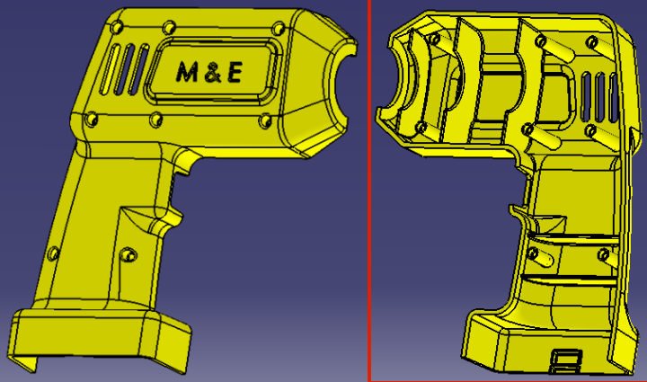
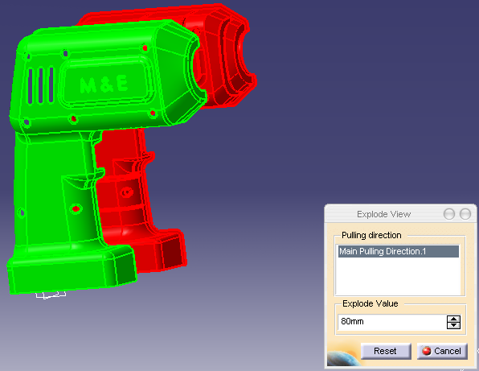
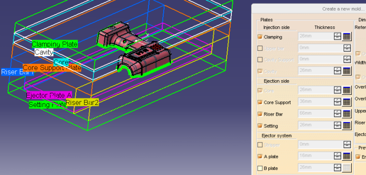
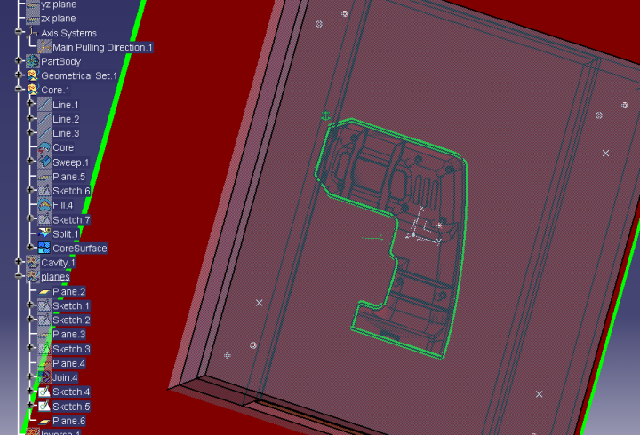
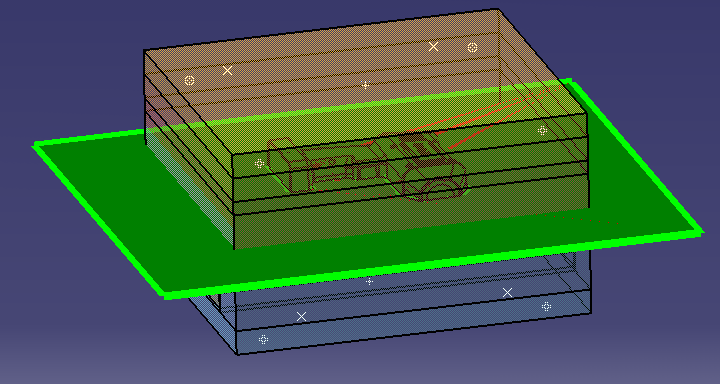
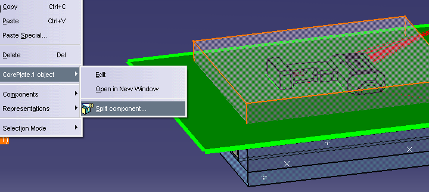
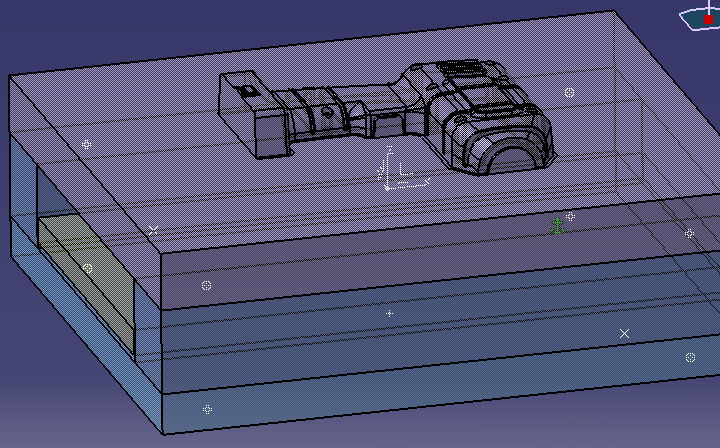

|
Bilen Emek Abalý
Makine Müh. Böl.,
Ýstanbul Teknik Üniversitesi
Þubat 2006, Ýstanbul
Not-1: Orijinal olarak TurkCADCAM.net Dergisi 2. Sayýsý için hazýrlanmýþ bu makale, Nisan 2007'de TurkCADCAM.net Portalý'nda yayýnlanmýþtýr.
Not-2: Bu makale, aþaðýdaki bitirme tezinin sadeleþtirilmiþ versiyonudur:
Plastik Enjeksiyon Kalýbý Tasarýmý
ÝTÜ Makina Fakültesi,
Makina Mühendisliði Bölümü,
Güz, 2005-2006 dönemi bitirme tasarým projesi:
Hazýrlayanlar:
Melih Koçak,
Bilen Emek Abalý
Danýþman:
Yard. Doç. Dr. Vedat Temiz
Bu tezin PDF formatlý orijinalini aþaðýdaki linkten indirebilirsiniz;
PlastikEnjeksiyonKalibiTasarimi.pdf (114 sayfa - 7,5MB)
1 Giriþ
Bu çalýþmada, plastik enjeksiyon üretim yönteminin avantajlarý ve geliþmiþ özelliklere sahip polimer malzemelerin çeþitliliði ile ülkemizde de yaygýn mühendislik çalýþmalarýyla geliþen plastik enjeksiyon kalýbý tasarýmcýlýðýnda yeri artan bilgisayar destekli konstrüksiyonun kullanýmý ve basit bir kalýp tasarýmýnda uygulamalý örneklenmesi hedeflenmektedir.
Ürün, bir el matkabýnýn gövdesinin bir yarýsýdýr. Ürünün tasarýmý üzerinde durulmamýþtýr. Plastik malzemelerle konstrüksiyon için hem tecrübe hem de üretim yönteminin sýnýrlarý bilinmelidir [1].
CAD ortamýnda, ürünün kalýp tasarýmý CATIA V5 yazýlýmý ile yapýlmýþtýr ve bütün adýmlar, karþýlaþýlan sorunlarýn muhtemel nedenleri ve çözüm önerileri anlatýlmýþtýr. Tasarýmýn CAD ortamýnda yapýlmasý ile çekme payý hesaplamalarý ve kalýbýn çalýþmasýna engel olabilecek konstrüktif hatalar kolayca öngörülmüþtür.
Enjeksiyon çevriminin en uzun zaman dilimi kalýbý dolduran eriyiðin soðutulmasýdýr. Bu yüzden bir parçanýn üretim zamanýný en çok etkileyen aþamasý soðutma sistemi tasarýmýdýr. Kanal boyutlandýrmasý, kalýp ve plastik malzeme ýsýl özellikleri, ortam koþullarý ve üretim hassasiyetine dayanan, tasarýmýn verimliliðini dolayýsý ile soðuma zamanýný etkileyen birçok parametre vardýr. Tüm bu parametreleri belirleyebilmek ve içerebilecek bir formül yaratmak imkansýzdýr, ancak bazý yaklaþýmlar ve ampirik sonuçlara dayanan tecrübeler bulunmaktadýr. Bu bilgiler ile tasarlanan soðutma kanallarý, CFD (Computational Fluid Dynamics - Hesaplamalý Akýþkanlar Dinamiði) metoduna dayanan Moldflow (Plastics Insight V5) yazýlýmý aracýlýðý ile denenmiþ ve geliþtirmeler yapýlmýþtýr. Eriyiðin kalýba dolmasý, akýþ, ürünün mekanik özelliklerini etkilemektedir. Akýþ analizi yapýlmýþ ve olasý sorunlar incelenmiþtir. Ürünün, kalýptan çýktýðýnda sahip olacaðý sýcaklýk farklarý iç gerilmeleri yaratacak ve çarpýlmalar oluþacaktýr. Çarpýlma analizi FEM (Finite Elements Method - Sonlu Elemanlar Yöntemi) ile yine Moldflow programýna çözdürülmüþtür. Kullanýlan yöntemlerin matematiksel altyapýsýný algýlayýp, parametrelerin seçilmesinde gösterilen özen, gerçeði yansýtan sonuçlar alýnmasýnýn tek þartýdýr.
2 Ürün Geometrisi
Ürün, bir el matkabýnýn dýþ kabýnýn yarýsýdýr; Resim 1 ve Resim 2'de görülmektedir;

Resim 1, 2 - Ürünün önden ve arkadan görünüþü
Tek açýlýmda üretilebilecek basit bir parçadýr. Kalýp tasarýmýný kolaylaþtýracak bir ayýrma düzlemi mevcuttur. Duvar kalýnlýklarý deðiþkenlik göstermemektedir ve soðuma esnasýnda çökmenin gerçekleþebileceði yerlere kaburgalar ile destek yapýlmýþtýr. Dýþ tarafta kalan kýsýmda bir yazý yazýlmýþtýr (simgesel olarak bu tasarýmda M & E harfleri kullanýlmýþtýr). Hassas iþleme baþarýsý sebebi ile elektro erozyon son pasoda tercih edilir. Üründe kabartma yapmak için kalýpta oyuk-çukur oluþturmak gerekecektir ve sadece yazýnýn iþlenmesi geri kalan tüm yüzeyin iþlenmesinden kolaydýr. Bu yüzden, yazýnýn kabartma olmasý, kalýbýn üretimi açýsýndan daha az maliyetlidir. Genelde 1mm'yi geçmeyen kabartma yazýlar duvar kalýnlýðýný deðiþtirmektedir. Daha geç soðuyacak olan bu bölümün çökme olasýlýðý cidar kalýnlýðý yüzünden daha fazladýr, fakat aksi yönden yazýnýn olduðu kýsým kalýp ile daha fazla yüzeyden temas halindedir (temas yüzeyi / hacim daha büyüktür), ki bu durum soðumanýn etkinliðini arttýrmaktadýr ve çökme gerçekleþmemektedir. Yazýlarýn dolma anýna dikkat etmeli ve tam dolma saðlanacak, mümkünse hava sýkýþmasý yaratmayacak (deðilse havalandýrma kanallarý açýlmalýdýr) yönelimi saðlayacak enjeksiyon noktasý (noktalarý) seçilmelidir.
3 Malzeme Özellikleri
Ürün için, malzeme olarak ABS seçilmiþtir. Oldukça iyi ve dengeli özellikleri nedeni ile günümüzde giderek daha fazla kullaným alaný bulan ABS, Akrilonitril, Bütadien ve Stiren' den oluþan bir termopolimerdir ve bu polimerlerin oranlarýnda oynamalar yapýlarak ABS'nin özelliklerini belli ölçülerde deðiþtirmek mümkündür.
4 Kalýp Tasarýmý
Kalýp tasarýmý için CATIA V5 programýnýn Core & Cavity ve Mold Tooling arayüzleri [2] kullanýlmýþtýr.
4.1 Model Transferi
IGES formatýnda gelen parça CATIA programýnda açýldýktan sonra ilk önce Join komutu ile yüzeyler bir araya toplanmýþ, Healing ile de birbirine 0.1mm'den daha yakýn olan noktalar birleþtirilmiþtir (merging). Daha sonra Part arayüzünden Close Surface komutu ile, yaratýlan yüzeyler topluluðu bir katý model haline getirilmiþtir. Topolojideki bu modifikasyon, programýn her arayüzde yüzeylerle çalýþamamasýndan zorunlu kýlýnmýþtýr. Model transferinin baþarýsý daha sonraki çalýþmalarýn tümünü olumlu yönde etkilemektedir.
4.2 Çekme Payý Girilmesi
Her kalýplama çeþidinde, sýcak giren malzeme katýlaþýrken ýsý kaybeder ve katý hale geçerken küçülür. Bu yüzden kalýplar parça teknik resminde istenen boyutlardan büyük yapýlýrlar. Çekme hesabý lineer olarak yapýlýr ve uzunluða baðlýdýr. Malzeme saðlayýcýdan bu bilgi temin edilebilir. Kullanýlan malzemenin çekme aralýðýnda olan 0.01 m/m deðeri esas alýnmýþtýr. Model ilk önce Scale komutu ile xy, yz, xz alanlarýnda sýrasý ile 1.01 oraný ile çarpýlarak büyütülür.
4.3 Kalýp Ayrým Hat ve Yüzeylerinin Çýkarýlmasý
Core & Cavity Design arayüzünde, Pulling Direction komutu ile, kalýp açýlma yönünü belirterek yüzeyler otomatik olarak atanýr ve Transfer Element ile erkek (core) ve diþi (cavity) kalýp arasýnda yüzeylerin yeri deðiþtirilir. Böylece belirlenen renklerle erkek ve diþi kalýp görselleþtirilir (bkz. Resim 3).

Resim 3 - Erkek (kýrmýzý) ve Diþi (yeþil) kalýplarýnýn patlatýlmýþ görünümü
4.4 Kalýp Yüzeylerinin Büyütülmesi
Oluþturulan erkek ve diþi kalýp yüzeyleri, kalýbýn yontulmasýnda kullanýlacaktýr ve yüzeyler devamlý olmalýdýr. Bu yüzden tüm delikler Fill komutu yardýmý ile doldurulur ve Aggregate Mold komutu ile erkek ve diþi kalýp yüzeyleri ayrý ayrý birleþtirilir, tek yüzey yaratýlýr. Son olarak oluþturulacak kalýptan daha büyük bir yüzey, kalýp ayrým düzleminde oluþtulmalý ve parça izdüþümü (project 3D komutu) bu yüzeyden kesilerek (shape design arayüzündeki split face komutu) ayrýlmalýdýr. Tüm bu yüzeyler Join komutu ile birleþtirilir (örnek isim : CoreSurface).
4.5 Kalýp Gövdesinin Modellenmesi
Yapýlmasý gereken ilk iþlem, Tools /Options /General /Document /Link Documentation Localisation /Other Directory /Modify komutu ile oluþturulacak parçalarýn hangi klasöre atanacaðýný belirlemek gerekmektedir. Daha sonra New Mold komutu ile seçim yapýlabilir.

Resim 4 - Kalýp seçilirken plakalarýn öngörünümü

Resim 5 - Modelin yerleþimi

Resim 6 - Ýliþkilendirmeler
Erkek ve diþi kalýp üzerinde oluþturulacak yüzey kesme iþlemi Split Component ile yapýlýr (mavi iþaretli, bkz. Resim 6). Sonuç sadece erkek kalýp için Resim 8'de görülmektedir.

Resim 7 - Komut gösterimi

Resim 8 - Kalýp gravürü
|